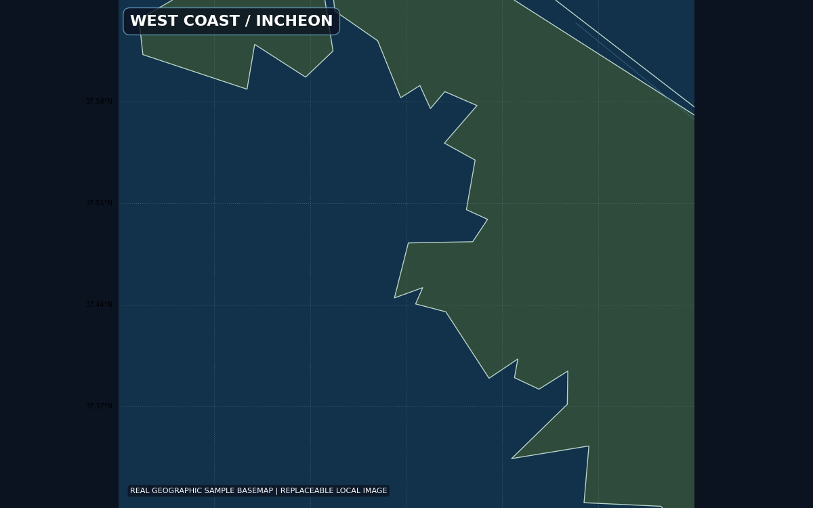
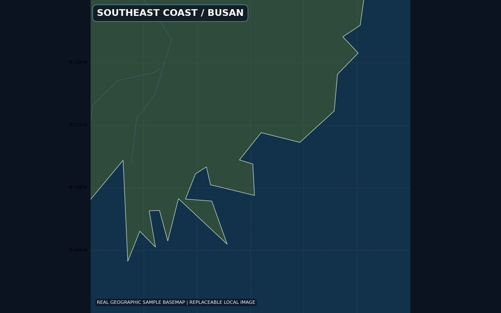
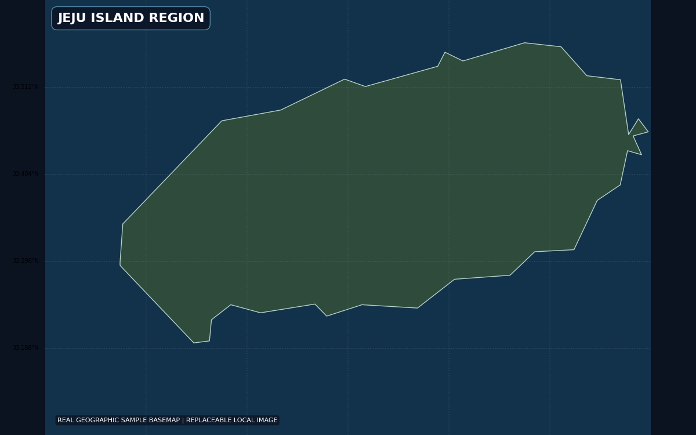

통신 계층 분리
플랫폼 통신은 추천 점수에 반영하고 지휘통신 링크는 명령 보류·재전송 조건으로 처리.
SYSTEM SOFTWARE · COMMAND AND CONTROL
공중·수상·수중·지상 무인체계의 탐지, 대응수단 추천, 기동, 교전, 재교전을 통합한 WPF 기반 시뮬레이터.

01 / SYSTEM
외부 JSON 시나리오와 실행 로직을 분리하고, 0.1초 주기의 시뮬레이션 엔진이 탐지부터 재교전까지 자동 수행하는 MVVM 구조.
02 / DECISION
플랫폼 통신은 추천 점수에 반영하고 지휘통신 링크는 명령 보류·재전송 조건으로 처리.
이전 플랫폼에 고정하지 않고 잔존 표적의 건전성과 모든 가용 수단을 다시 평가.
UAV는 직선, USV·UUV는 수로, UGV는 도로 경로망을 따라 이동.
ID 고유성, 참조 정합성, 좌표 범위, 경로망 영역, XAML·C# 구조를 실행 전 검사.
03 / SCENARIOS

